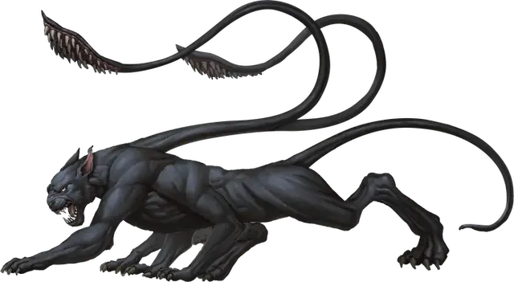

Ускользающий зверь
Displacer Beast
Большой Монстр, законно-злой

Класс Доспеха 13 (природный доспех)
Хиты 85 (10к10 + 30)
Скорость 40 футов
| мод | спас | ||
|---|---|---|---|
| СИЛ | 18 | +4 | +4 |
| ЛОВ | 15 | +2 | +2 |
| ТЕЛ | 16 | +3 | +3 |
| мод | спас | ||
|---|---|---|---|
| ИНТ | 6 | −2 | −2 |
| МДР | 12 | +1 | +1 |
| ХАР | 8 | −1 | −1 |
Чувства тёмное зрение 60 футов, пассивное Восприятие 11
Опасность 3 (700 опыта)
Бонус мастерства +2
Среда обитания Лес
Особенности
Избегание. Если ускользающий зверь подвергается эффекту, позволяющему совершить спасбросок, чтобы получить только половину урона, он вообще не получает урон, если преуспеет, и получает лишь половину урона при провале.
Ускользание. Ускользающий зверь проецирует магическую иллюзию, из-за которой кажется, что он находится немного в стороне, и броски атаки по нему совершаются с помехой. Если по нему попадает атака, эта особенность перестаёт действовать до конца его следующего хода. Эта особенность также перестаёт действовать когда ускользающий зверь недееспособен или когда его скорость равна 0.
Действия
Мультиатака. Ускользающий зверь совершает две атаки щупальцами.
Щупальце. Рукопашная атака оружием: +6 к попаданию, досягаемость 10 футов, одна цель. Попадание: Дробящий урон 7 (1к6 + 4) плюс колющий урон 3 (1к6).
Описание
Этот чудовищный хищник получил своё название от способности искривлять свет таким образом, что он кажется стоящим в нескольких футах от того места, где он находится на самом деле. Ускользающий зверь похож на большого кота, покрытого гладким иссиня-чёрным мехом. Его чужеродное происхождение явно заметно по шести ногам и двум щупальцам, которые растут из его плеч, и заканчиваются подушечками с острыми шипами. Глаза зверя светятся ужасающей злобой, сохраняющейся даже после его смерти.
Неблагое происхождение. Ускользающие звери веками бродили в сумеречных землях Страны Фей, пока не были порабощены и обучены Неблагим Двором. Воины Двора выводили зверей, стараясь усилить их свирепый и хищный нрав, используя их для охоты на единорогов, пегасов и на другую диковинную добычу. Тем не менее, у ускользающих зверей ушло не так много времени, чтобы использовать свой злобный разум, и сбежать от своих хозяев.
Бежавшие и свободно размножающиеся в Стране Фей ускользающие звери вскоре привлекли внимание Благого Двора. С помощью мерцающих псов фейские охотники отогнали этих хищников на окраину Страны Фей, где многие из них перешли на Материальный План. По сей день ускользающие звери и мерцающие псы нападают друг на друга, едва завидев.
Любовь к убийству. Ускользающие звери убивают не только ради пропитания, но и просто ради забавы. Они ищут добычу даже когда не голодны, и часто играют с жертвой, чтобы развлечь себя, пока они не станут готовы приступить к трапезе. После убийства добычи щупальцами, ускользающий зверь утаскивает труп в тихое место, где ничто не отвлечёт его от насыщения.
Ускользающие звери охотятся в одиночку или небольшой стаей, демонстрируя мастерство в установке засады. Одинокий зверь ударит и исчезнет, заманивая добычу в дремучую чащу, где ждёт остальная стая. Стаи ускользающих зверей, охотящиеся вблизи торговых путей, запоминают частоту и расписание регулярных караванов, и устраивают засады на них.
Ценные сторожевые и домашние животные. Злобные разумные существа держат ускользающих зверей как питомцев, но последние вступают в такой союз только если сочтут его полезным. Ускользающий зверь может охранять жилище или выступать телохранителем у знатной личности.